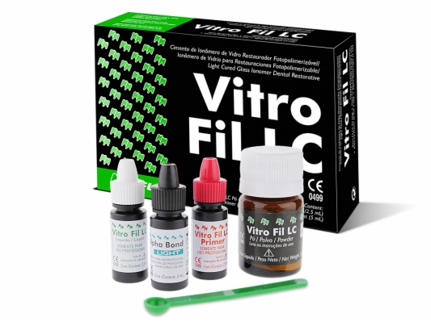
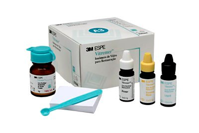
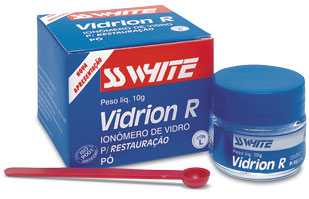
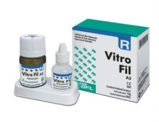
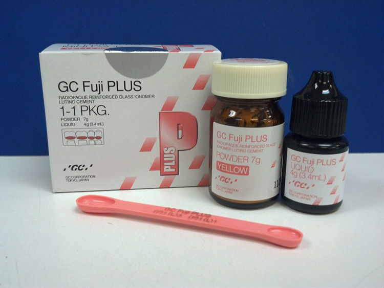
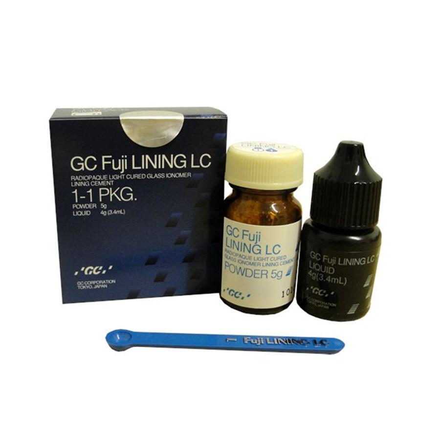

A odontologia deste final de século tem se desenvolvido intensamente em todos os campos seja na área de prevenção, estética, endodôntia; entre outros. Desta forma, faz alguns anos, seu interesse tem-se voltado a solução de doenças coletivas, neste caso, a cárie dentária, uma doença reversível, controlável, tratável nos estágios iniciais.
No ano de 1908, Black preconizou os princípios gerais de preparo cavitário, os quais definiram a forma de intervenção uma vez instalado o processo da cárie. Hoje, cerca de 90 anos após, os novos princípios restauradores priorizaram a preservação do tecido dentário sadio, e a dentística restauradora passa a desempenhar importante papel social, ou seja, a visão renovadora baseada na preservação da estrutura dentária.
No entanto, para que fosse possível esta nova perspectiva, novos materiais com características diversas se tornaram necessários. Baseados nestas necessidades, em 1972 na Inglaterra, Wilson & Kent, avaliando as características do cimento de silicato e do policarbonato de zinco, observaram que o primeiro tinha como fundamentos principais a presença de Flúor e a baixa alteração dimensional responsáveis ambos pelo excelente comportamento deste material.
Por sua vez, o cimento policarboxilato de Zinco, apresentava como aspecto relevante a adesividade à estrutura dentária produzida principalmente pelo ácido poliacrílico. Nesse sentido, foram estas particularidades as que determinaram o surgimento do cimento híbrido: Ionômero de Vidro. O Ionômero de Vidro foi comprovado como elemento eficaz nas restaurações dentárias passando a ocupar um espaço cada vez maior dentro da Odontologia.
Desde sua criação vem sendo aperfeiçoados e atualmente é utilizado em procedimentos que vão desde os preventivos ( selamentos de cicatrículas e fissuras), passando por procedimentos curativos tradicionais (restaurações de classe I, III, V, bases e forramentos de cavidades) até como agentes de cimentação e tratamentos endodônticos. O cimento de Ionômero de Vidro foi comercializado desde 1975 primeiramente na Europa, para posteriormente difundir se no mundo.
Pela sua composição dos materiais os Ionômeros de vidro são classificados quanto a suacomposição em três grupos:
- Convencional / Anidro;
- Reforçados por metais;
- Modificados por resinas
O cimento de Ionômero de Vidro Convencional apresenta uma contextura no pó, o qual está formado por pequenas partículas de alumínio - silicato de cálcio, preparado pela fusão de misturas de sílica, alumínio criolite, fluoretos, fluoretos de alumínio e fosfato de alumínio a uma temperatura de 1050 ºC e 1350 ºC, com tempo de exposição de 45 a 120 minutos, posteriormente é resfriado imediatamente para formar vidro com íons de lixiviáveis e opacos sob tensão e um líquido podendo ser uma solução aquosa de ácido poliacrílico e/ou ácido itacônico bem como ácido polimalêico.
O anidro é semelhante ao convencional com algumas modificações na formulação. Tais modificações se resumem na incorporação do ácido, após liofilizado e seco à vácuo, ao pó, ficando o líquido sendo somente água destilada. Desta forma, torna-se mais fácil o controle da proporçãopó/liquido, aumentando o tempo de armazenagem e eventuais efeitos deletérios sobre a polpa. Tais efeitos são reduzidos em relação aos cimentos convencionais.
Constituído de líquido semelhante ao dos ionômeros convencionais e o pó composto demistura do pó convencional com partículas de liga de amálgama ou partículas de liga de prata sintetizadas com as partículas de vidro.
Apresentam na sua composição uma mistura de água/HEMA. A quantidade de água absorvida parece ser diretamente proporcional ao conteúdo de HEMA do material. Parte do líquido do ácido polialcenóico é substituído porhidroxietil metacrilato. Esses materiais podem apresentar duas a três presas.
Existem várias classificações sendo a mais recente a sugerida por TAY E LYNCH (1989), que divide os cimentos de Ionômero de vidro em quatro grupos.
- Tipo I: indicados para a cimentação de incrustações, coroas, próteses e dispositivos ortodônticos
- Tipo II: indicados para restaurações.
- Tipo III: indicados para forramentos ou base e selamentos de cicatrículas e fissuras
- Tipo IV: indicados para as mesmas indicações do tipo I a III.
A reação de presa nos cimentos convencionais ocorre em três estágios:
Fase de Deslocamento de Ions - durante a aglutinação do pó e líquido, a fase aquosa dos ácidos umedece e dissolve a camada externa das partículas do vidro do pó. O hidrogênio desloca os íons cálcio e alumínio que, por sua vez, reagem com o flúor formando fluoretos de cálcio e de alumínio.
Conforme a acidez aumenta o fluoreto de cálcio, que é instável , se dissocia e reage com os copolímeros acrílicos para formar complexos mais estáveis. A mesma reação que ocorre entre o líquido e o pó, ocorre entre o líquido e as paredes cavitárias: o hidrogênio desloca íons cálcio e fosfato, que reagem com os grupos carboxílos, aderindo quimicamente à estrutura dentária.
A inserção do material deve ser feita na etapa inicial dessa fase enquanto o cimento apresenta brilho indicando a presença de grupos carboxílicos livres para que ocorra a união química entre ionômero e o dente.
Fase de Formação da Matriz Poliácidos - Nessa fase, o cálcio que está carregado positivamente tem sua liberação acelerada e reage com as cadeias aquosas de poliácidos carregados negativamente e forma, ligações cruzadas iônicas de poliacrilato de cálcio, reduzindo a mobilidade das cadeias poliméricas aquosas e formando a matriz de gel.
Quando esse processo atinge um certo estágio, o cimento endurece. Essa fase ocorre cerca de 5 a 10 minutos após o início da manipulação.A aparência do Ionômero é então opaca por causa da grande diferença, no índice de refração entre ovidro e a matriz. No entanto essa opacidade deve desaparecer quando o cimento atingir a presa final.
Fase de Formação do Gel Sílica Incorporação do vidro à Matriz - Esta fase ocorre nas
primeiras 24 horas, acompanhada de uma pequena expansão em condições de alta umidade, quando o material atinge seu endurecimento final, que se continua por meses ou anos.
Podem apresentar três sistemas diferentes de ativação do componente resinoso:
- Sistema foto ativado.- os ionômeros modificados por resina apresentaram a típica reação ácido/básica descrita para os ionômeros convencionais e também uma reação de fotopolimerizaçãodo monômero solúvel na água (HEMA).
- Sistema de presa dual.- Os ionômeros de vidro que apresentaram este sistema além da reaçãoácido/básica e da fotopolimerização, ainda possuem iniciadores químicos para polimerizar os componentes metacrilatos que existem no material. Essa característica permite que ocorra polimerização na ausência de luz.
- Sistema quimicamente ativado.- neste sistema ocorre a reação ácido/básica do ionômero convencional e a polimerização química dos componentes resinosos.
Pode-se citar como vantagens dos cimentos de ionômero de vidro modificados por resinas:
- Características de endurecimento melhoradas;
- Maior tempo de trabalho;
- Controle sobre a presa do material;
- Alta resistência total;
- Maior resistência total;
- Melhor estética inicial;
Pode-se citar como desvantagens dos cimentos de ionômero de vidro modificados por resinas:
- Maior contração de polimerização de (3,24% a 3,63%) em comparação com as resinas P50 e Silux que apresentam respectivamente (2,19% e 1,72%);
- Menor translucidez;
- Mudança de cor após de 1 e 2 anos de inserção das restaurações.
De Acordo com a Composição Química
Os cimentos ionômeros foram comercializados desde 1975 primeiramente na Europa, para posteriormente difundirse pelo mundo. Sua venda é realizada de diversas maneiras:
- Frascos ( pó / líquido) - estão embalados em frascos separados, o seu proporcionamento correto é essencial para se obter um cimento com propriedades óptimas. A proporção pó / liquido varia entre diferentes marcas comerciais. Temos assim por exemplo:
- Os convencionais.- . são o Glaslonomer Cement Type II, Shofu.
- Dentro dos anidros temos o pó e liquido (água destilada ou uma solução aquosa a 10% de ácido tartárico). Comercialmente são conhecidos como Chemfil II, destisply Internacional, Chelon-fil, Espe.
- Dentro dos reforçados por metais temos, o Miracle Mix, G.C. Chelon- Silver, Espe.
- Dentro dos modificados por resina temos o Vitremer 3M.
- Cápsulas - são manipulados em dispositivos mecânicos, sendo que a própria cápsula esta feita para inserção do material na cavidade. A cápsula pode se apresentar em dois tamanhos: standar(normal) com capacidade de 0,1 ml. e Maxicap, contendo até 0,3 ml de material.
A liberação de flúor dos cimentos ionoméricos ocorre com maior intensidade nas primeiras 24 a 48 horas e permanece em menor concentração por longos períodos.
Estudos recentes têm mostrado a capacidade dos cimentos de ionômeros de vidro de adquirir flúor de distintas fontes e funcionar como verdadeiro reservatório desse elemento, permitindo sua liberação constante e mantendo ao longo prazo suas propriedades anticariogênicas.
Vários estudos têm mostrado que a liberação de flúor ocorre tanto com os cimentos de ionômeros de vidro convencionais como com os ionômeros modificados por resinas. Os cimentos de ionômero de vidro encapsulados apresentam maior liberação de flúor que os cimentos proporcionados manualmente 7.
Adesividade
Ocorre fundamentalmente por ligações químicas dos radicais carboxílos (COOH) aos íons de cálcio existentes no esmalte, dentina e cimento. A união adesiva é mais forte com o esmalte por este conter um maior percentual de cálcio e a capacidade devedamento marginal é altamente efectiva, isto em função da grande quantidade de grupos carboxílicos estão disponíveis para ligações com o esmalte.
Além da adesão às estruturas dentárias, se unem também a todos os metais, por reacção de oxidrilação, não entanto não apresenta união satisfatória com o ouro, platina e porcelana. O profissional deve estar muito atento à consistência da mistura que se deve apresentar plástica e brilhante, denotando a disponibilidade de líquido suficiente para que ocorra a adesão ao dente. A adesividade dos ionômeros modificados por resina é superior à dos convencionais.
Coeficiente de Alteração Volumétrica Térmica
Os cimentos de ionômero de vidro apresentam os coeficientes de expansão térmica mais próximos aos da estrutura dentárias. Os ionômeros convencionais possuem um coeficiente de expansão térmica linear melhor do que dos ionômeros modificados por resina, que mostram valores semelhantes aos do amálgama ou das resinas compostas híbridas.
Compatibilidade biológica
Kawahara (1979) conclui que o cimento de ionômero de vidro é um material mais biocompatível do que os outros cimentos dentários como o fosfato de zinco e o policarboxilato de zinco. Estudos realizados por Plant e colaboradores 7 indicam que quando houver uma espessura considerável de dentina entre o assoalho cavitário e a polpa ( cavidades rasas ou de média profundidade), não haverá necessidade de qualquer tipo de forramento.
Porém, se a cavidade for julgada profunda, com uma fina camada de dentina separando a polpa do meio bucal, estes cimentos mostrarão-se irritantes, devendo ser empregado um forramento com cimento de hidróxido de cálcio, antes da sua inserção.
Resistência à compressão e à tração
Os ionômeros modificados por resinas possuem resistência superior aos convencionais, mostrando valores de duas a três vezes maiores, no caso de ionômeros restauradores. Quando os cimentos de ionômeros de vidro convencionais e os modificados por resinas foram comparados às resinas compostas estes apresentaram resistência mecânica inferior que limita sua indicação em lesões de caries extensas.
Estética
Devido à sua alta opacidade não apresentam uma estética satisfatória quando comparados às resinas compostas. Portanto, seu emprego fica limitado a áreas que não comprometam a estética, como por exemplo em cavidades de classe III estritamente proximal ou com acesso palatal e em regiões mais opacas do dente como por exemplo a região de pré- molares e molares.
Solubilidade
Os cimentos de ionômeros de vidro apresentam alto grau de solubilidade e desintegração ao meio bucal, portanto estes devem receber proteção superficial através dos próprios dos materiais ouresinas fluidas (agentes adesivos).
Entre as principais indicações do cimento de ionômero de vidro em odontologia podemos citar:
- Selamentos de cicatrículas e fissuras
- Classe I conservativas
- Classe II tipo tunel e “slot”horizontal;
- Classe III e V – lesões cariosas;
- Classe V – erosão, abrasão e abfração;
- Restaurações laminadas ou mistas (sanduíche);
- Material de proteção (forramento);
- Restaurações de dentes decíduos;
- Núcleos de preenchimento;
- Cimentação de coroas parciais, totais e próteses fixas;
- Cimentação de bandas e colagem de acessórios ortodônticos;
- Agente de cimentação em endodontia e como selador apical em cirurgiãs paraendodônticas.
Contra-indicações
Os cimentos ionoméricos, no atual estágio de desenvolvimento, são materiais frágeis, com baixa resistência à tração e ao cisalhamento e portanto, são contra-indicados para áreas sujeitas a grandes cargas oclusais. Apresentam, também, insuficiente translucidez para serem empregados na superfície vestibular visível. Portanto, estes materiais estão contra-indicados para restaurações:
- Classe II com envolvimento da crista marginal
- Classe IV
- Com grande perda de esmalte vestibular
- Em áreas de cúspides
- Em áreas submetidas a grandes esforços mastigatórios.
Cuidados Durante a Técnica Clínica
Os cuidados devem ser rigorosos para se obter resultados satisfatórios priorizando o seguinte:
Cuidados com Pó e o Líquido
Os frascos devem estar bem fechados para evitar o ganho ou perda de água, já que os cimentos de ionômero de vidro são essencialmente hídricos; O líquido não deve ser armazenado na geladeira, devido a que perde suas propriedades originais. O pó e a placa ou bloco de manipulação podem ser mantidos em refrigerador com a finalidade de aumentar o tempo de trabalho.
Cuidados com os Cimentos Encapsulados
Utilizar a cápsula o mas rápido possível após o rompimento da envoltura que a protege do meio ambiente, devendo ser desprezada após 1 mês. Pressionar o clipe que reveste o reservatório do líquido por no mínimo 2 segundos, o que garantirá a passagem de todo o líquido para o interior da cápsula. Usar o triturador próprio fornecido pelo fabricante ou um triturador que possibilite 4000rpm.
Obs. Independentemente do tipo de apresentação, em forma do pó e líquido ou encapsuladas, o cimento somente deverá ser usado enquanto apresentar um aspecto brilhante.
Proporcionamento do Pó e o Líquido
- A adição de pouco pó resulta em uma mistura fluida, aumenta a solubilidade, e diminui a resistência à abrasão;
- A adição de muito pó origina um menor tempo de trabalho e de presa, diminui a adesividade da mesma forma reduz a translucidez;
- O pó e o líquido devem de ser proporcionados de acordo com as instruções do fabricante;
- O frasco de pó deve ser agitado antes da sua utilização (principalmente os cimentos anidros com a finalidade de evitar-se que quantias exageradas de partículas de vidro ou de ácido liofilizado sejam proporcionados com o liquido);
- O frasco do líquido deve ser posicionado na vertical e a uma distância da placa que permita a saída livre da gota;
- O tempo de aglutinação deve ser de acordo com as instruções do fabricante.
Cuidados para Prevenir Falhas na Adesão
- Limpar e secar a cavidade preparada;
- Usar proporção pó/ líquido correta;
- Inserir material com brilho úmido;
- Prevenir contaminação com umidade;
- Não remover a matriz precocemente;
- Na remoção inicial dos excessos, realizar movimentos com a lâmina de bisturi da restauração para o dente.
- Realizar acabamento na próxima sessão (da restauração para o dente).
Cuidados para a Prevenção de Erosão
- Usar proporção pó/líquido correta;
- Prevenir contaminação da restauração com a umidade;
- Aplicar proteção superficial imediatamente na restauração.
Cuidados para Diminuir a Porosidade e o Manchamento
Comprimir o material com matriz durante 5 min. (quimicamente ativado) ou durante a polimerização (foto-ativado);
Não inserir o cimento após perda do brilho úmido;
Realizar o acabamento e polimento tardios com instrumentos lubrificados e sob refrigeração de spray ar/água.
Cuidados para a Prevenção de Trincas e Rachaduras
- Não usar proporção baixa de pó/líquido;
- Proteger a restauração imediatamente após a remoção da matriz;
- Não sobre aquecer a restauração durante o acabamento e polimento;
- Não dar acabamento sobre jatos de ar.
CONDICIONADORES DA ESTRUTURA DENTÁRIA ANTES DA APLICAÇÃO DOS CIMENTOS DE IONÔMERO DE VIDRO
A estrutura dentária (dentina) antes de receber o cimento do ionômero de vidro deve ser tratada com soluções ácidas fracas e mordentes com o objetivo de melhorar as características adesivas do cimento. As soluções ácidas empregadas são:
- Ácido poliacrilico (10 a 25 %)
- Líquido do cimento Durelon (40%)
- Solução ITS
- Condicionador a base de ácido cítrico (5 a 10%) e cloreto de férrico (1 a 3%)
AGENTE PARA PROTEÇÃO SUPERFICIAL DO CIMENTO DE IONÔMERO DE VIDRO
Os cimentos de ionômero de vidro são materiais altamente sensíveis a perda de água durante a sua função na cavidade bucal, mesmo após as primeiras 24 horas, período no qual o material apresenta maior resistência devido à maturação do cimento estar avançada, com a finalidade de proteger estes cimentos são utilizados os vernizes próprios dos materiais e resinas fluidas (agentes adesivos). Recentemente foi demostrado que o esmalte de unhas incolor apresentou o melhor
desempenho na proteção superficial do cimento de ionômero de vidro durante a presa. Atualmente os agentes utilizados para a proteção superficial do cimento de ionômero de vidro, presentes no mercado, são:
- Fuji Varnish, G.H;
- Fuji Coat LC. GC;
- KetacGlase, GC;
- Esmalte incolor para unhas (Colorama)
IMAGENS COMERCIAIS






REFERÊNCIAS BIBLIOGRÁFICAS
NAVARRO, Maria Fidela de Lima – Cimento Ionômero de Vidro – Aplicações Clínicas em Odontologia, São Paulo: Artes Médicas, 1998.
Phillips,I – Materiais Dentários – Rio de Janeiro 11º edição.
Revista Eletrônica de Materiais e Processos, v.3.1 (2008) Materiais odontológicos: Cimentos de ionômero de vidro - A. C. B. M. FooV. V. C. Azevedo; W. P. F. Barbosa; T. B. Fidéles; M.V.L. Fook- Unidade Acadêmica de Engenharia de Materiais – Universidade Federal de Campina Grande.